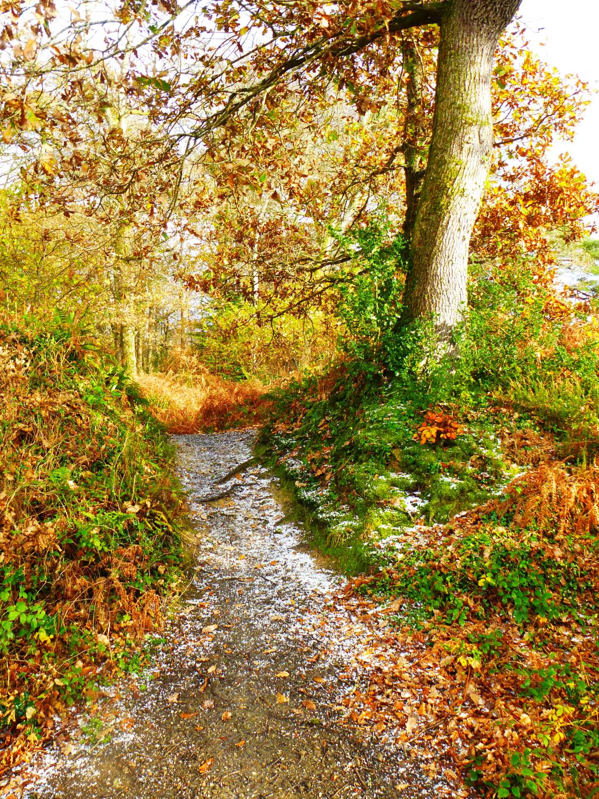

Start Ref: 8280 4040
End Ref: 8280 4040
Distance: 2 miles
Time: 1hrs
We start this walk by leaving our car in a little lay-by, just before the Bridleway turning off to Roundwood Quay, on the road to Cowlands. Walk up the Bridleway in an Easterly direction as it goes slightly uphill, until we reach a gate on our left. Here, the National Trust have opened up a Permissive Path which follows some of the Feock Trails. This leads into a narrow path which winds around the hill we are on, giving us glimpses of Cowlands and the creek.
The path opens out into a field, which we can either walk across the top of, or walk down (Northerly) and follow the lower edge of the field until it brings us back up to the top. In either case, we leave this field at the top and enter a second field. Again we are presented with the same choice, but I would suggest taking the lower walk around the field which brings us out onto the Bridleway section at the Southern edge of this field (which is also remarkably good for Blackberries – when in season).
Once in the Bridleway turn left (East) and follow for a short distance. Here there is a gate into a field on our right which is marked by a lovely old tree with a hollow trunk. We will return to this point later, but for the time being we are going to continue down to a larger gate on our right which will take us in to the protected area which is Roundwood Fort – an Iron Age Fort which is now full of Beech and Holly, but still shows its impressive ramparts.
Follow the path through and you come upon some steep steps which will lead us down to the Quay. Here, we are greeted by marvellous views of the River Fal, higher up than the King Harry Ferry, but not quite so far as Tolverne. Stop and sit a while, make memories and laugh – we have.
When you are refreshed, head back up the path to the old hollow tree, and now enter this field and head left (South) where we pass a freshly planted orchard and we rejoin a footpath heading right (Westerly) and we follow the edge of Lamouth Creek.
As we get to the head of this creek, Beech trees become dominant and we drop down and walk across a lovely wooden footbridge. Just after the bridge we are going to turn right (left would lead us to Trelissick – on another day) and follow the broad track for about a third of a mile until it joins another Bridleway. Go through the gate and turn right (Northerly), crossing over a small stone footbridge and head on up the path until we come back to the road where we have parked. (the lay-by is on our right).
Paul, thank you for the guidance, friendship, memories and letting me marry your daughter.
"Go Steady Mush"